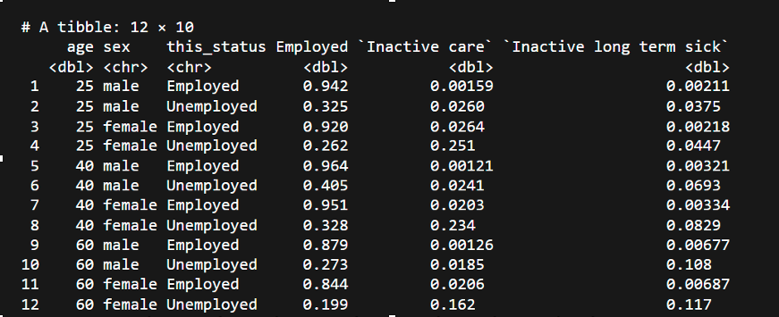
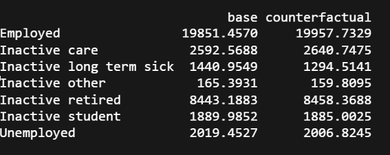

Calculating Population Attributable Fractions (PAFs)
Note:The example given here is largely taken from this notebook in the economic-inactivity project repository.
- We begin with a dataset, which includes information on age, sex, current economic status and health.
devtools::load_all(here::here('R'))
library(tidyverse)
# library(haven)
# library(here)
library(nnet)
# devtools::load_all(here('R'))
# base_dir_location <- "big_data/UKDA-6614-stata/stata/stata13_se/ukhls"
# indresp_files <- dir(here(base_dir_location), pattern = "[a-z]_indresp.dta", full.names = TRUE)
varnames <- c(
"jbstat", "dvage", "sex", "health"
)
vartypes <- c(
"labels", "values", "labels", "labels"
)
df_ind <- get_ind_level_vars_for_selected_waves(varnames = varnames, vartypes = vartypes, waves = letters[1:11])
# Clean the data
df_ind_health_standardised <-
df_ind |>
# dvage uses negative values to indicate missing. The code below explicitly turns them all to missing values
mutate(across(dvage, function(x) ifelse(x < 0, NA, x))) |>
# This renames dvage to age
rename(age = dvage) |>
filter(between(age, 16, 64)) |>
mutate(
lt_condition = case_when(
health %in% c("No", "no") ~ FALSE,
health %in% c("Yes", "yes") ~ TRUE,
TRUE ~ NA_integer_
) |> as.logical()
) %>%
filter(complete.cases(.)) - After confirming that the inclusion of a health variable improves the penalised model fit over the foundational model, we use the extended model including health to prodict the probability of each individual in a sample frame being in each economic state at the next wave.
# foundational model
mod_00 <-
nnet::multinom(
next_status ~ this_status * sex + splines::bs(age, 5),
data = df_ind_health_standardised |>
filter(!is.na(lt_condition))
)
# proposed extended model specification
mod_01 <-
nnet::multinom(
next_status ~ this_status * sex + splines::bs(age, 5) + lt_condition,
data = df_ind_health_standardised
)
# comparing model fits (lower is better for both AIC and BIC)
AIC(mod_00, mod_01)
BIC(mod_00, mod_01)
# our sample frame (wave j of UKHLS)
# baseline scenario: everyone's characteristics as observed
df_ind_ltcondition_wave_j_baseline <-
df_ind_health_standardised |>
filter(!is.na(lt_condition)) |>
filter(wave == 'j')
# counterfactual scenario: anyone now has no long term health condition
df_ind_ltcondition_wave_j_good_counterfactual <-
df_ind_ltcondition_wave_j_baseline |>
mutate(lt_condition = FALSE)
# Predictions using sample frames under both baseline and counterfactual scenario:
# baseline predictions
preds_baseline <- predict(mod_01, newdata = df_ind_ltcondition_wave_j_baseline, type = "probs")
# counterfactual predictions
preds_good_counterfactual <- predict(mod_01, newdata = df_ind_ltcondition_wave_j_good_counterfactual, type = "probs")
- An example of what this looks like is shown in the table below.

This is saying that:
- The first person has a 94.2% probability of being employed in the next wave, a 0.159% probability of being inactive and looking after home and family etc.
- The second person has a 32.5% probability of being employed in the next wave, a 2.6% probability of being inactive and looking after home and family etc.
- The rows for all columns of mutually exclusive and exhaustive economic (in)activity states (not all shown here), should add up to 100%.
Using the
apply()function, we sum each column to provide a new estimate of the number of people in each economic activity category to provide a baseline forecast. The total number of observed ‘people’ in the baseline forecast will equal the total number of observed people in the original dataset.We then go to back to the original dataset and change the health variable:
- For the discrete variable we turn off long-standing illness (by changing each value of yes to no). The code to do this can be found here.
- For the continuous variable we improve the derived value (SF-12 scores, mental and physical health interacting, physical health having a greater impact) by 1 standard deviation. The code to do this can be found here.
We then use the foundational model + health to forecast the probability of each individual being in an economic state at the next given, given their changed health status.
Using the apply function, we sum each column to provide a new estimate of the number of people in each economic activity category to produce a counterfactual forecast.
We can create a table showing the absolute values of the baseline and counterfactual forecasts side by side. We can calculate the absolute and relative change for each economic state.
# summing up predictions over columns to get projected numbers of persons in each economic activity state:
predictions_summary_matrix <- cbind(
# The number 2 indicates do the sum function for each column.
# If it were 1 then this would sum for each row (which should add up to 1 in call cases)
apply(preds_baseline, 2, sum),
apply(preds_good_counterfactual, 2, sum)
)
colnames(predictions_summary_matrix) <- c("base", "good_counter")
predictions_summary_matrix

- PAFs are calculated using the relative change in the number of people in each economic activity category between the baseline and counterfactual forecast. In the example below, this means improved health is anticipated to lead to an 11% reduction in the number who are economically inactive, long-term sick.
sim_relative_change <- apply(
predictions_summary_matrix, 1, function(x) (100 * x / x[1])
) |>
t()
sim_relative_change